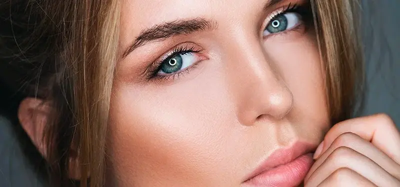

Что такое натуральный макияж
Натуральный макияж — это техника, при которой кожа выглядит ухоженной, свежей и здоровой без плотного покрытия. Главная цель — создать эффект «своей кожи, только лучше», без ощущения перегруженности.
Такой макияж часто называют nude-макияж, макияж без макияжа (no makeup look), естественный макияж или skin-like makeup. Все эти термины описывают один подход — подчеркнуть естественную красоту, а не перекрыть её.
В отличие от плотного вечернего макияжа, здесь важны тонкие слои, правильная подготовка кожи и лёгкие текстуры. Кожа должна «светиться изнутри», а не выглядеть матовой маской.
Натуральный макияж идеально подходит для повседневной жизни, офиса, учёбы и даже съёмок — он делает лицо ухоженным, но при этом остаётся практически незаметным.
👉 Подробнее о макияже для жирной кожи
👉 Подробнее о макияже для сухой кожи
Почему он лучше для повседневной жизни
- не перегружает кожу
- не подчёркивает текстуру и сухость
- выглядит естественно при любом освещении
- подходит для жары и активного дня

Подготовка кожи
Хороший макияж начинается с ухода. Даже дорогие средства не дадут красивого результата, если кожа обезвожена или имеет неровную текстуру.
Подготовка кожи помогает выровнять поверхность, улучшить сцепление макияжа и продлить его стойкость. Это особенно важно при натуральном макияже, где каждая деталь остаётся заметной.
- Очищение — мягкое средство без пересушивания
- Увлажнение — крем или лёгкий гель по типу кожи
- SPF — защита от солнца в дневное время
Важно дать уходу впитаться 5–10 минут перед нанесением макияжа — так тон ляжет ровнее и не будет скатываться.

Пошаговый натуральный макияж


Натуральный макияж строится на принципе лёгкости и баланса. Его задача — не скрыть кожу, а подчеркнуть её естественную красоту. Такой подход особенно актуален в повседневной жизни и в тёплом климате, где плотные текстуры быстро выглядят тяжело.
Лёгкий тон
Используйте BB-крем или тон с лёгким покрытием. Он должен выравнивать цвет кожи, но не перекрывать её полностью. Эффект — “своя кожа, только лучше”.
Консилер
Наносите точечно — только там, где это действительно нужно: под глаза, на покраснения или несовершенства.
Пудра
Лёгкая фиксация только в Т-зоне. Не матируйте всё лицо — это убивает эффект натуральной, “живой” кожи.
Румяна
Лучше выбирать кремовые текстуры — они сливаются с кожей и дают естественный румянец.
Брови и ресницы
Минимальная коррекция: расчёсанные брови и слегка прокрашенные ресницы. Без чётких линий и графики.
Губы
Бальзам или нюдовые оттенки завершают образ и делают его более свежим.
Такой макияж подчёркивает естественную красоту и подходит для каждого дня — без перегруженности и ощущения “маски” на лице.
Топ средств для натурального макияжа
Для натурального макияжа важно выбирать лёгкие текстуры и средства, которые работают с кожей, а не перекрывают её.
Независимый обзор. Продукты не спонсируются.


Премиум-средства для натурального макияжа
Независимый обзор. Продукты не спонсируются.
Премиальные продукты отличаются более тонкими текстурами и лучшей адаптацией под кожу. Они создают эффект «вторая кожа» без перегрузки.


Частые ошибки
- слишком плотный тон
- избыточная пудра
- резкий контуринг
- тяжёлые текстуры

Бюджетный набор для натурального макияжа (до 500 MDL)
💡 Общая стоимость набора: ~440–460 MDL
Независимый обзор. Продукты не спонсируются.


Не уверены, что подходит именно вам?
Запишитесь на идеальный макияж с правильным уходом под ваш тип кожи к профессиональному специалисту.
Записаться на услугу

Частые вопросы о натуральном макияже
Подходит ли натуральный макияж для жирной кожи?
Да, но важно правильно подготовить кожу. Используйте лёгкий матирующий крем, а тон наносите в минимальном количестве. Фиксируйте только Т-зону, чтобы сохранить естественный эффект.
Чем натуральный макияж отличается от обычного?
Основное отличие — в плотности покрытия. Натуральный макияж не перекрывает кожу полностью, а лишь выравнивает тон и подчёркивает естественные черты.
Можно ли скрыть акне при натуральном макияже?
Да, но точечно. Вместо плотного тонального крема используйте консилер только на проблемные зоны, чтобы сохранить эффект «живой» кожи.
Как сделать макияж более стойким?
Ключ — в подготовке кожи. Хорошее увлажнение и лёгкая база помогают макияжу держаться дольше без утяжеления.
Подходит ли такой макияж для работы и офиса?
Это один из лучших вариантов для повседневной жизни. Он выглядит аккуратно, свежо и уместно в любой ситуации — от офиса до встреч.
Нужна ли пудра в натуральном макияже?
Да, но в минимальном количестве. Лучше наносить её только на зоны, где кожа быстрее становится жирной, чтобы не потерять естественное сияние.